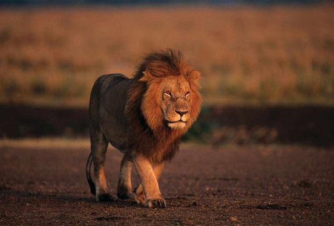

Get to know Lions!
Lions are large, powerful cats known as the "king of the jungle" due to their strength and pride-based social structure. They are native to Africa and
a small population lives in the Gir Forest of India. Lions are the only big cats that live in groups, called prides, which typically include related females
, their cubs, and a few males. This social structure helps them hunt more effectively and protect their territory.
Male lions are distinguished by their impressive manes, which can signal health and strength to potential mates and rivals. Lions are apex predators, hunting
animals like antelope, zebras, and buffaloes. While they are skilled hunters, females do most of the hunting for the pride, working together to bring down prey.
Lions are also known for their vocal communication, especially their loud roars, which can be heard up to 5
